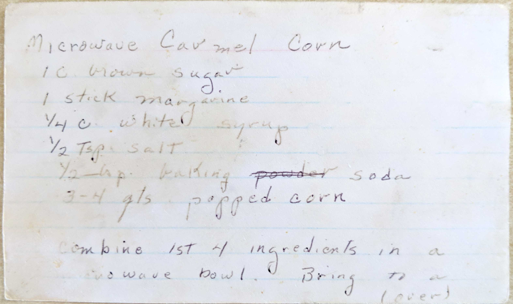
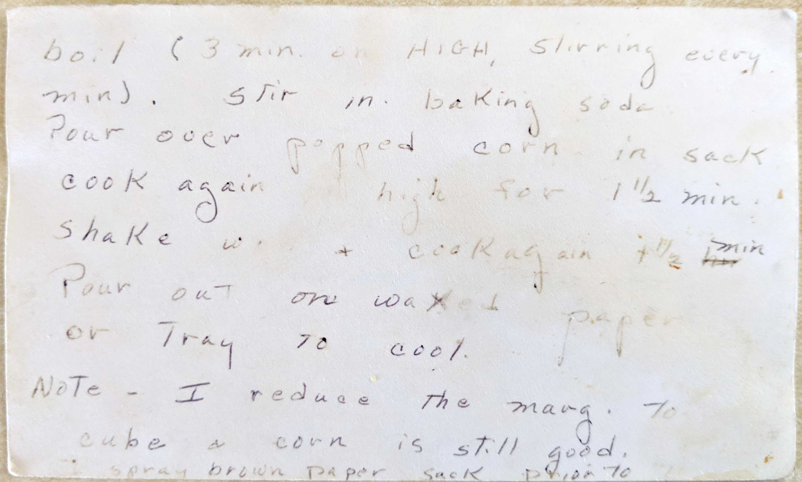

Microwave Carmel Corn
1 C brown sugar
1 stick margarine
1/4 c white syrup
1/2 tsp salt
1/2 tsp baking powder soda
3-4 qts popped corn
combine 1st 4 ingredients in a microwave bowl. Bring to a (over)

boil (3min on HIGH, stirring every min). Stir in baing soda
Pour over popped corn in sack, cook again on high for 1 1/2 min.
Shake well + cook again 1 1/2 min
Pour out on wax paper or tray to cool.
Note - I reduce the marg. to cube + corn is still good.
Spray brown paper sack prior to [storage? transport?]